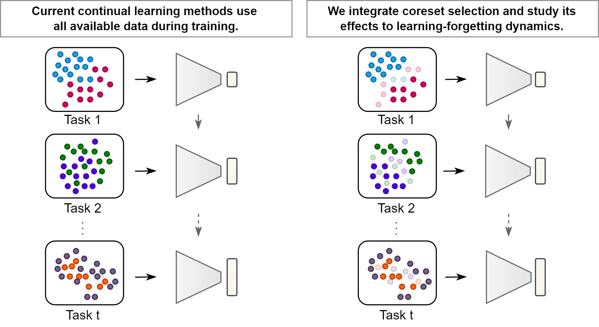
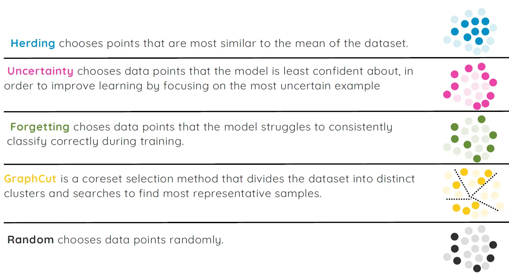
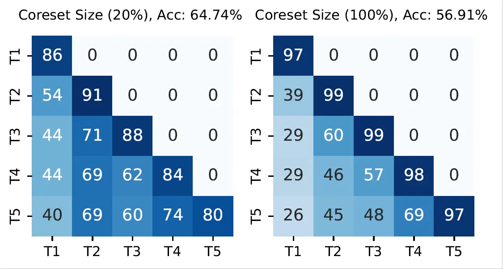
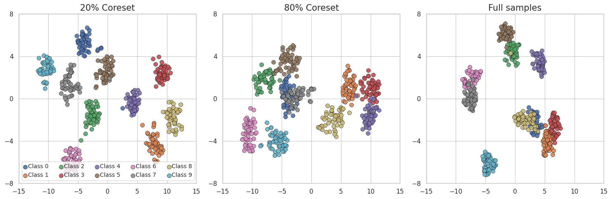

Continual Learning with Informative Samples
Continual Learning with Informative Samples: An Empirical Evaluation of Coreset Strategies
Elif Ceren Gok Yildirim, Murat Onur Yildirim, Joaquin Vanschoren
Background
Continual Learning (CL) aims to enable models to learn sequentially from streaming data, retaining previously acquired knowledge while adapting to new tasks, a duality known as the stability-plasticity balance. This balance is critical for mimicking human-like learning, where accumulated knowledge is preserved (stability) yet flexibly updated with novel experiences (plasticity). There is big line of research that focus on achieving better stability-plasticity tradeoff by building and proposing new methods to literature.
Motivation
While these methods improve performance, they share a common assumption: all training samples are equally valuable and must be exhaustively utilized. By default, this standardized practice prioritizes plasticity (integrating new information) at the risk of destabilizing learned representations, as redundant or noisy samples may overwrite critical prior knowledge. This ”learn-it-all” paradigm diverges from human learning efficiency since, as humans, we are initially exposed to vast amounts of information but intuitively filter and prioritize them, focusing on key experiences (e.g. clear and novel examples) that enrich our understanding while disregarding redundant details.

The Overall Game Plan
In our approach, we put traditional CL methods to the test by comparing their performance when trained on the full dataset versus when they’re trained on a carefully selected, informative subset of samples (coreset).
We structured our training into two distinct phases:
Warm-Up Phase: The CL model undergoes initial, partial training. This phase is key because it lets us analyze the model’s behavior and data representations, which in turn helps us pick out the most informative samples.
Learning Phase: Once the warm-up is complete, we switch to training on just the selected subset of samples. This phase is much longer and is where the model truly refines its knowledge.
Note that the warm-up phase is generally much shorter than the learning phase since it’s only long enough for the model to “warm up” and provide the insights needed for effective sample selection.
CL Baselines
Below is a quick comparison of the CL baselines we used in our work:
| Architecture-based | Memory-based | Regularization-based |
|---|---|---|
| DER, FOSTER, MEMO | iCaRL, ER | LwF |
| Dynamically expands the model’s representation space by adding new features for new tasks. | Holds a memory buffer from previous tasks and keeps learning from them along with new tasks. | Regularizes the model’s parameters when learning new tasks to retain previously acquired knowledge. |
Coreset Baselines
Below is a quick comparison of the Coreset baselines we used in our work:

Findings and Insights
We observed a significant improvement in continual learning performance when training with coreset samples instead of full datasets. We found out that this enhancement comes from achieving optimal stability-plasticity tradeoff.
While training with all samples often boosts performance on the current task, it tends to forget earlier tasks. In contrast, using a selective subset (coreset) of samples helps retain prior knowledge better, even if it sacrifices on current task performance.
The heatmap below illustrates accuracy across tasks after each learning session on Split-CIFAR10. It compares full-sample training with the best-performing coreset strategy.

As seen in the figure, coreset training reduces forgetting, preserving earlier knowledge more effectively.
Why Does It Work: A Look Into Representations
To better understand why this happens, we visualized the learned feature space using t-SNE plots of DER’s representations on Split-CIFAR10.

With 20% of the data, coreset-trained models form well-separated class clusters, suggesting clearer, less entangled representations.
As we increased the coreset fraction to 80%, and then to the full dataset, the class clusters became less distinct:
We also quantified this observation by calculating inter-class distances in the t-SNE-embedded space:
- 20% coreset: 11.68
- 80% coreset: 10.71
- Full dataset: 10.67
This confirms our visual findings: more data does not always lead to better representations or ensure better learning. Sometimes, it blurs the boundaries between classes, increasing the risk of forgetting past tasks specially in CL.
When Coresets Don’t Help
While coreset-based training improves many CL methods, there are notable exceptions. Methods like FOSTER and LwF (which relies solely on regularization) perform better when trained with the full dataset. These approaches seem to require the complete data distribution to operate effectively.
We provide detailed insights and analysis for these exceptions in the full paper, including possible explanations and ablation studies.
Since I don’t want to bore you with nitty-gritty details, I invite you to check out our paper. We would be happy if you want to talk about this work, so please feel free to reach out to us 😊.
This post was written by Elif Ceren Gok Yildirim and need not reflect the view of co-authors.